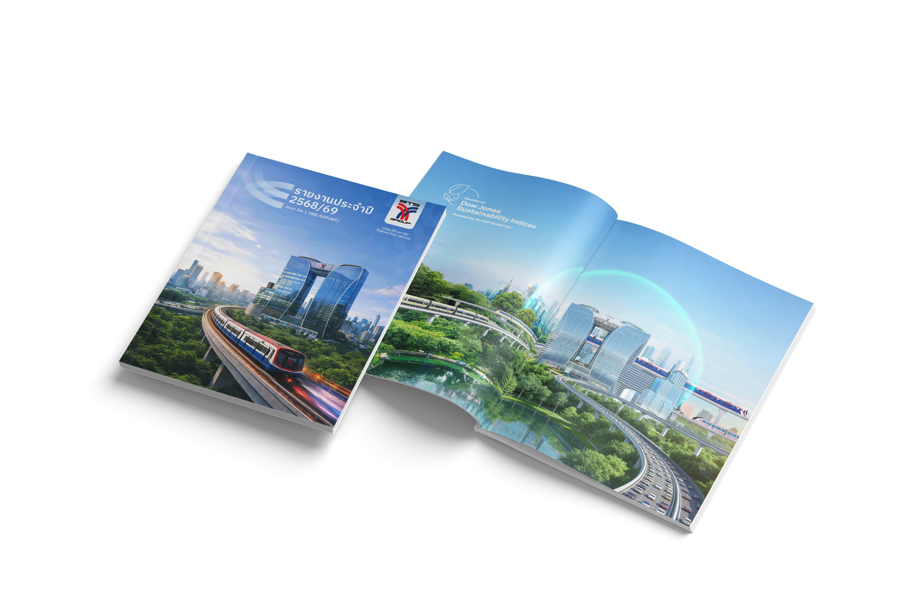
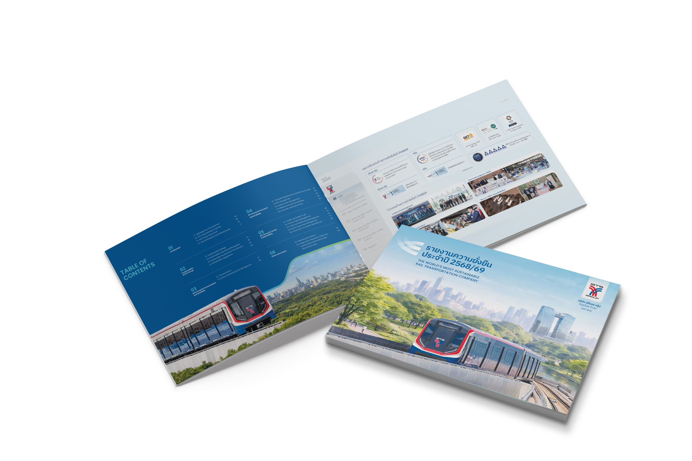
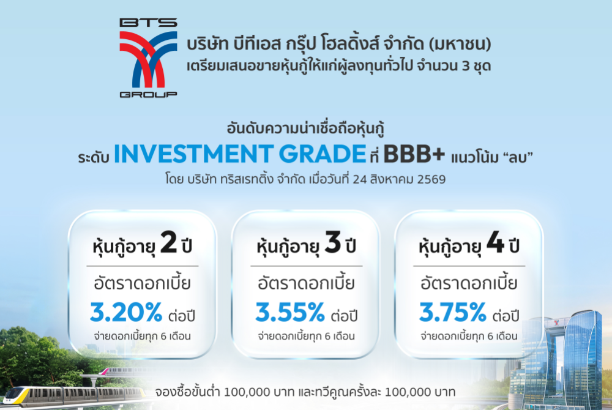
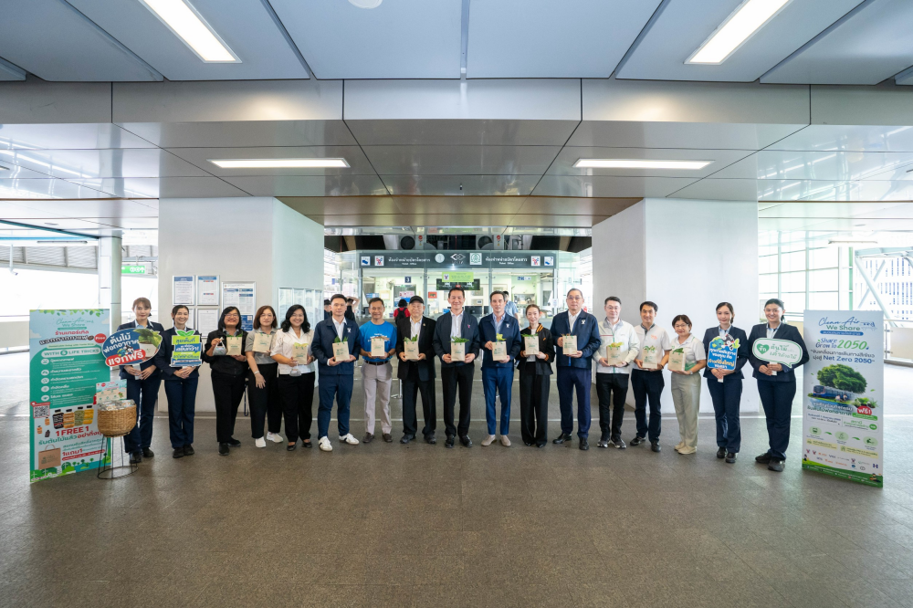

People
ผู้โดยสารหลากหลายวัยกว่า 700,000 คน/วัน ใช้ชีวิตประจำวันผ่านเครือข่าย BTS Skytrain
ก้าวผ่านประตู สู่เมืองที่ทุกอย่างเชื่อมถึงกัน
เว็บไซต์ต้องทำให้ผู้ใช้รู้สึกถึงความเชื่อมต่ออย่างแท้จริง — คน ธุรกิจ ข้อมูล และโอกาส ล้วนเชื่อมโยงกันภายใต้ BTS Group เดียวกัน
ผู้โดยสารหลากหลายวัยกว่า 700,000 คน/วัน ใช้ชีวิตประจำวันผ่านเครือข่าย BTS Skytrain
เชื่อมโยงพันธมิตรธุรกิจและร้านค้าตลอดแนวเส้นทาง ให้คนเมืองใช้ชีวิตได้สะดวกขึ้นทุกวัน
แพลตฟอร์มเชื่อมข้อมูล O2O ที่ทำให้ทุกธุรกิจในเครือมองเห็นภาพเดียวกัน
โอกาสใหม่เกิดขึ้นทุกจุดเชื่อมต่อ — จากผู้โดยสารสู่พันธมิตรสู่นักลงทุน
คน ธุรกิจ ข้อมูล และโอกาส — สี่จุดเชื่อมต่อที่ทำงานร่วมกันภายใต้ BTS Group เดียว จากการเดินทางในแต่ละวัน สู่การเติบโตของทั้งเมือง
คนและธุรกิจ — สองฐานที่ทำให้เครือข่ายมีชีวิตในทุกวัน
ตัวเลขตัวอย่าง · รอข้อมูลจริงจากทีมธุรกิจผู้โดยสารหลากหลายวัยกว่า 700,000 คน/วัน ใช้ชีวิตประจำวันผ่านเครือข่าย BTS Skytrain
พันธมิตรและร้านค้ากว่า 200 ราย ตลอดแนวเส้นทาง ที่เป็นส่วนหนึ่งในชีวิตประจำวันของคนเมือง
ข้อมูลและโอกาส — สิ่งที่เกิดขึ้นเมื่อทุกจุดเชื่อมต่อทำงานร่วมกัน
แพลตฟอร์มเชื่อมข้อมูล O2O ให้ทุกธุรกิจในเครือมองเห็นภาพเดียวกัน
โอกาสใหม่ในทุกจุดเชื่อมต่อ — จากผู้โดยสาร สู่พันธมิตร สู่นักลงทุน
เว็บไซต์ต้องทำให้ผู้ใช้รู้สึกถึงความเชื่อมต่ออย่างแท้จริง — คน ธุรกิจ ข้อมูล และโอกาส ล้วนเชื่อมโยงกันภายใต้ BTS Group เดียวกัน
ตัวเลขตัวอย่าง · รอข้อมูลจริงจากทีมธุรกิจผู้โดยสารกว่า 700,000 คนต่อวันเดินทางผ่านเครือข่าย BTS Skytrain — จุดเริ่มต้นของทุกการเชื่อมต่อ ตั้งแต่หน้าบ้านจนถึงปลายทาง
ธุรกิจในเครือและพันธมิตรกว่า 200 ราย เข้าถึงผู้คนตลอดแนวเส้นทาง ผ่านสื่อ พื้นที่ค้าปลีก และบริการบนสถานี
แพลตฟอร์มเชื่อมข้อมูล O2O ที่ทำให้ทุกธุรกิจในเครือมองเห็นภาพเดียวกัน และออกแบบบริการได้ตรงกับชีวิตจริงของผู้คน
เมื่อคน ธุรกิจ และข้อมูลเชื่อมถึงกัน โอกาสใหม่ก็เกิดขึ้นในทุกจุดเชื่อมต่อ — จากผู้โดยสาร สู่พันธมิตร สู่นักลงทุน
ยกระดับความเชื่อมโยง
ขับเคลื่อนธุรกิจสู่อนาคตที่เชื่อมถึงกัน
BTS Group ไม่ได้เป็นแค่รถไฟฟ้า แต่คือ ระบบนิเวศ ที่ทำงานร่วมกันผ่าน 3 แพลตฟอร์ม — MOVE พาผู้คนไปถึง ทุกปลายทาง MIX เชื่อมข้อมูล และประสบการณ์ เข้าหากัน และ MATCH จับคู่ความสามารถ กับโอกาสใหม่ ให้ทุกการเชื่อมต่อ สร้างมูลค่าได้จริง
การสัญจร · คมนาคมขนส่ง · โครงสร้างพื้นฐาน · Door-to-door
ดูธุรกิจ MOVEพันธมิตร · ธุรกิจบริการ · ICT · บริการการเงิน · โอกาสใหม่
ดูธุรกิจ MATCHBTS Group ไม่ได้เป็นแค่รถไฟฟ้า แต่คือระบบนิเวศที่ทำงานร่วมกันผ่าน 3 แพลตฟอร์ม — เลื่อนลงเพื่อดูทีละแพลตฟอร์ม
Transportation solution ที่พาไปถึงทุกปลายทาง
เครือข่ายรถไฟฟ้า ระบบฟีดเดอร์ และโครงสร้างพื้นฐานที่ออกแบบให้การเดินทางต่อเนื่องแบบ door-to-door — ตั้งแต่ก้าวแรกจากบ้านจนถึงปลายทาง
การสัญจร · คมนาคมขนส่ง · โครงสร้างพื้นฐาน · Door-to-door
ดูธุรกิจ MOVEConnecting data & experience
สื่อ ร้านค้า บริการดิจิทัล และการกระจายสินค้า เชื่อมเข้าหากันด้วยข้อมูล ให้ทุกจุดสัมผัสของผู้คนต่อเนื่องทั้งออนไลน์และออฟไลน์
O2O · สื่อ · ดิจิทัล · การกระจายสินค้า · ข้อมูล
ดูธุรกิจ MIXConnecting capability & opportunity
จับคู่ความสามารถของธุรกิจในเครือกับพันธมิตร เทคโนโลยี และบริการการเงิน เพื่อเปิดโอกาสใหม่ที่ไม่มีใครทำได้ลำพัง
พันธมิตร · ธุรกิจบริการ · ICT · บริการการเงิน · โอกาสใหม่
ดูธุรกิจ MATCHBTS Group ไม่ได้เป็นแค่รถไฟฟ้า แต่คือระบบนิเวศที่ทำงานร่วมกันผ่าน 3 แพลตฟอร์ม — ทุกบริการด้านล่างเชื่อมถึงกันภายใต้กลุ่มเดียว
รถไฟฟ้า BTS สายสีเขียว ชมพู และเหลือง เชื่อมย่านสำคัญทั่วกรุงเทพฯ และปริมณฑล
สถานี ทางเชื่อม และจุดเปลี่ยนถ่าย ที่ออกแบบให้การเดินทางต่อเนื่องไร้รอยต่อ
ฟีดเดอร์และบริการไมล์สุดท้าย พาผู้คนจากหน้าบ้านถึงปลายทางในเส้นทางเดียว
เชื่อมประสบการณ์ออนไลน์และออฟไลน์ ตั้งแต่สื่อบนสถานีถึงการซื้อขายบนแพลตฟอร์ม
สื่อโฆษณาในระบบขนส่งและอาคาร ที่เข้าถึงผู้คนนับล้านในทุกจังหวะของวัน
ข้อมูลการเดินทางและพฤติกรรมผู้บริโภค ที่ช่วยให้ธุรกิจในเครือออกแบบบริการได้แม่นยำขึ้น
ร่วมมือกับพันธมิตรหลากหลายอุตสาหกรรม ต่อยอดความสามารถของกันและกัน
บริการการเงินดิจิทัลที่ต่อยอดจากการเดินทางในชีวิตประจำวัน
เปิดพื้นที่ให้ธุรกิจใหม่เติบโตบนระบบนิเวศ MOVE · MIX · MATCH
ทุกวันมีผู้คนนับล้าน เดินทางผ่านจุดเปลี่ยนถ่าย ของเมือง — MOVE พาผู้คนมาถึง MIX เชื่อมข้อมูล และประสบการณ์ และ MATCH คือจุดตัด ที่ทุกความสามารถ มาพบกัน กลายเป็นความเป็นไปได้ใหม่ ของทั้งเมือง
ผู้บุกเบิกรถไฟฟ้าบีทีเอสกว่า 20 ปี วันนี้กำลังขยายสู่การเดินทางแบบ door-to-door ทั้งทางราง ถนน น้ำ และอากาศ
ดูธุรกิจ MOVEการตลาด Offline-to-Online — สื่อ การชำระเงิน การกระจายสินค้า และข้อมูล แตกแขนงจากสถานีไปถึงทุกจุดหมาย
ดูธุรกิจ MIXMOVE · MIX และพันธมิตร พบกันที่จุดตัดเดียว แล้วต่อยอดสู่ธุรกิจโรงแรม บริการทางการเงิน ICT และอสังหาริมทรัพย์
หลายความสามารถ → จุดบรรจบ → ความเป็นไปได้ใหม่
ดูธุรกิจ MATCHMATCH เชื่อมความสามารถของทุกธุรกิจในเครือเข้ากับพันธมิตรและโอกาสใหม่ ตัวเลขเหล่านี้คือผลลัพธ์ของการเชื่อมต่อนั้น
ตัวเลขตัวอย่าง · รอข้อมูลจริงจากทีมธุรกิจพันธมิตรธุรกิจที่เชื่อมต่อเข้ากับระบบนิเวศ MOVE · MIX · MATCH
ธุรกิจบริการในเครือที่ใช้ฐานลูกค้าและข้อมูลร่วมกันผ่านแพลตฟอร์มเดียว
ของสถานีในเครือข่ายเชื่อมโครงข่าย ICT ที่รองรับบริการดิจิทัลของพันธมิตร
ผู้ใช้บริการทางการเงินดิจิทัลที่ต่อยอดจากการเดินทางในชีวิตประจำวัน
กว่าสองทศวรรษที่คนกรุงเทพฯ ฝากการเดินทางในแต่ละวันไว้กับ BTS — ตัวเลขเหล่านี้คือขนาดของเครือข่าย และความเชื่อมั่นที่สะสมมาตลอดเส้นทาง
จากใจกลางสุขุมวิทถึงย่านสีลม จากตัวเมืองถึงชานเมือง เส้นทางรถไฟฟ้า BTS พาผู้คนไปได้ทุกที่ที่เมืองนี้เติบโต และเชื่อมต่อกับระบบขนส่งอื่นอีกหลายสาย ให้การเดินทางไม่มีจุดสิ้นสุด
แผนผังโดยประมาณ · ตัวเลขตัวอย่าง รอข้อมูลจริงจากทีมเครือข่ายผู้โดยสารหลายแสนคนต่อวันใช้เวลาบนท้องถนนน้อยลง และถึงจุดหมายได้ตรงเวลามากขึ้น
สถานีและจุดเชื่อมต่อที่ออกแบบให้ชุมชนรอบเส้นทางเข้าถึงงาน การศึกษา และบริการได้ง่ายขึ้น
ระบบขนส่งพลังงานไฟฟ้าช่วยลดการปล่อยก๊าซเรือนกระจกเมื่อเทียบกับรถยนต์ส่วนบุคคล
พันธมิตรในระบบนิเวศเข้าถึงลูกค้าและโอกาสใหม่ผ่านเครือข่ายเดียวกันกับ BTS Group
ทุกการเดินทางบนเครือข่ายของเราส่งผลต่อชีวิตผู้คน ชุมชน สิ่งแวดล้อม และธุรกิจที่เติบโตไปด้วยกัน — เลือกดูผลกระทบในแต่ละด้าน
เนื้อหาตัวอย่าง · รอข้อมูลจริงจากทีม ESG / Sustainabilityผู้โดยสารหลายแสนคนต่อวันใช้เวลาบนท้องถนนน้อยลง และถึงจุดหมายได้ตรงเวลามากขึ้น
สถานีและจุดเชื่อมต่อที่ออกแบบให้ชุมชนรอบเส้นทางเข้าถึงงาน การศึกษา และบริการได้ง่ายขึ้น
ระบบขนส่งพลังงานไฟฟ้าช่วยลดการปล่อยก๊าซเรือนกระจกเมื่อเทียบกับรถยนต์ส่วนบุคคล
พันธมิตรในระบบนิเวศเข้าถึงลูกค้าและโอกาสใหม่ผ่านเครือข่ายเดียวกันกับ BTS Group

รายงานประจำปี (56-1 One Report)ปีบัญชี 2568/69
รายงานความยั่งยืนSustainability Report · ปีบัญชี 2568/69
ข่าวแจ้งตลาดหลักทรัพย์ทริสเรทติ้งจัดอันดับหุ้นกู้ที่ BBB+ · 24 ส.ค. 2569เบื้องหลังการวางแผนเส้นทางและจุดเปลี่ยนถ่าย ที่ทำให้การเดินทางแบบ door-to-door เป็นเรื่องจริงสำหรับคนเมือง

ยังไม่มีเรื่องราวในหมวดนี้ — ลองเลือก "ทั้งหมด"